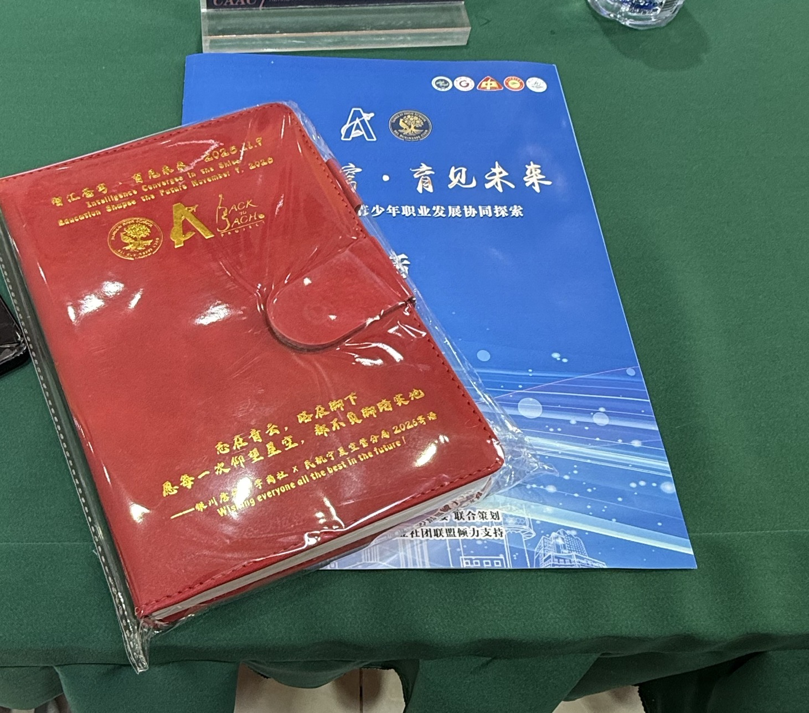
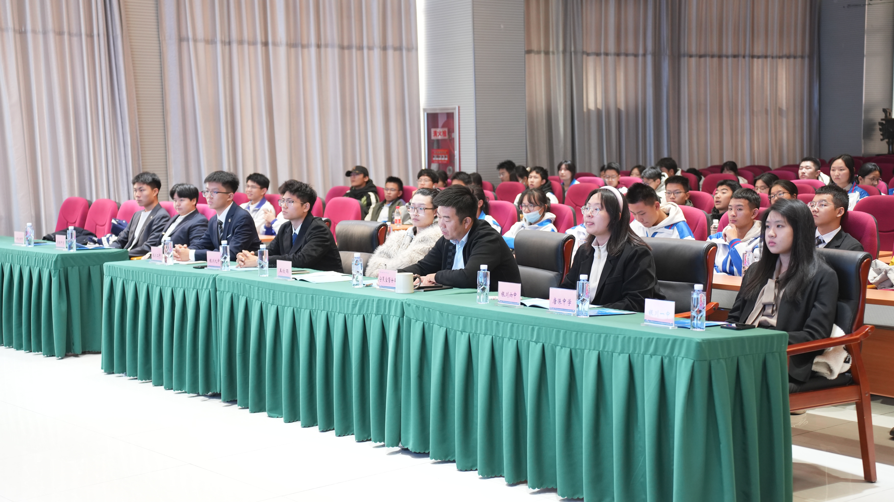
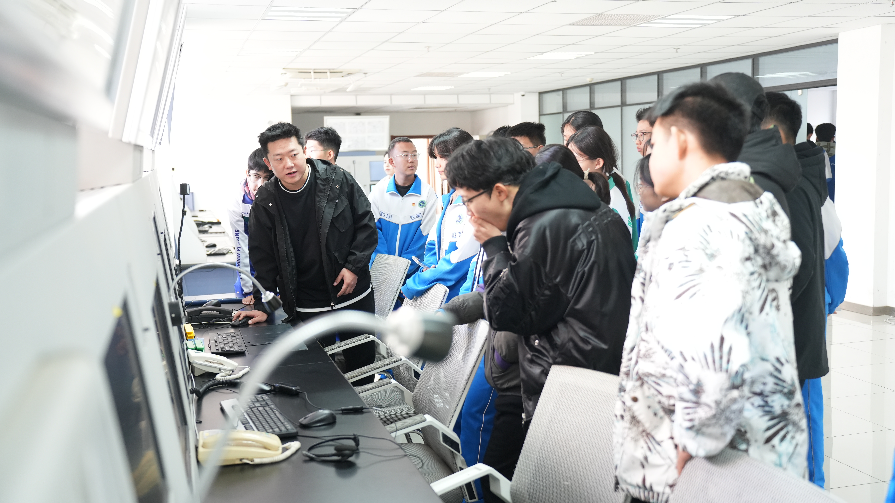
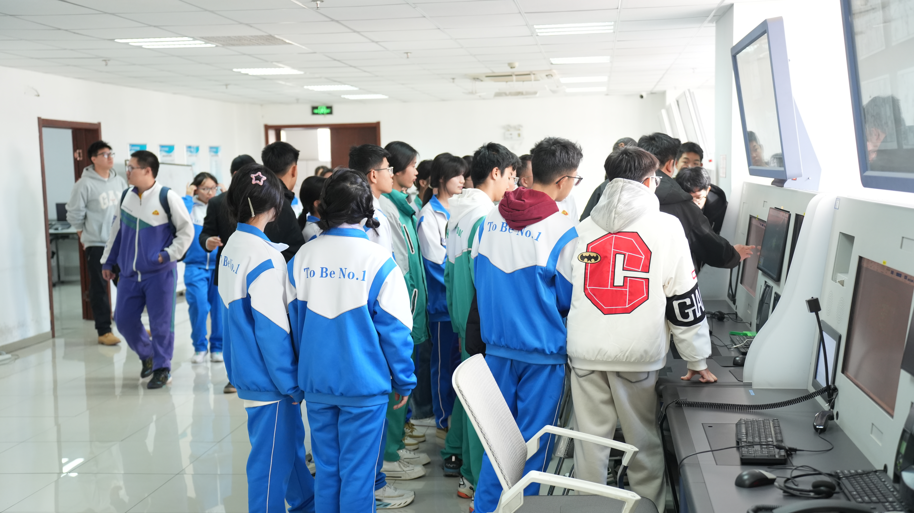
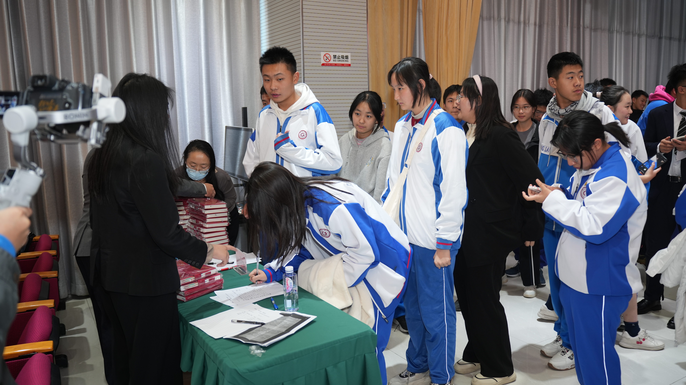
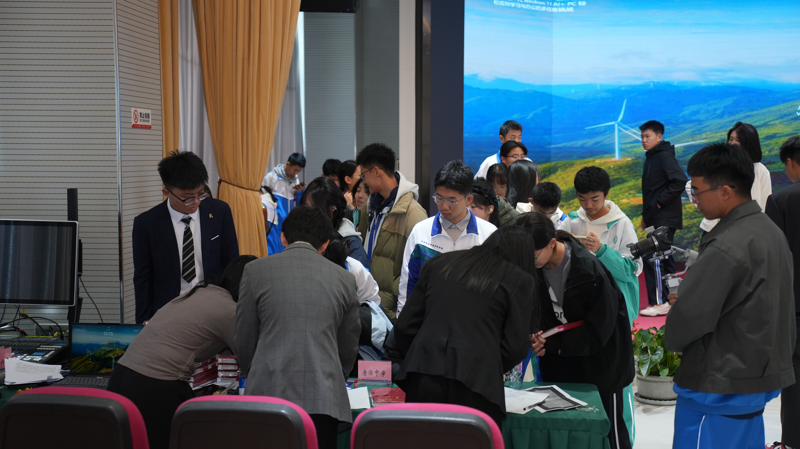

9 NOVEMBER 2025
Music, Aviation & Student Initiative
IN THE PRESSChina Daily ↗China News Service Ningxia ↗Ningxia Daily ↗Tanglai Middle School ↗Yinchuan Education Bureau ↗
Herong led planning through the BEL Business Club, working with the school’s Youth League committee and the Ningxia Air Traffic Management Bureau. More than 100 students from seven schools joined a day of classical-music appreciation, aviation education and air traffic control simulator experiences.








